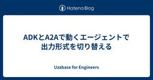

Uzabase for Engineers
https://tech.uzabase.com/
スピーダ, NewsPicksなどを開発するユーザベースのTech Blog & エンジニア採用サイト
フィード

ADKとA2Aで動くエージェントで出力形式を切り替える
Uzabase for Engineers
はじめに こんにちは、Speeda Product Teamの横山です。 Speeda AI Agentでは、多数のAgentがA2Aプロトコルを用いて連携しています。 各Agentは基本的にマークダウン形式のテキストで出力を返します。Agentや人間が読む場合はこれでも良いのですが、プログラムで扱う際は構造化された出力が欲しいです。 今回まさにそういう用途があったので、A2A x ADKでクライアントからのリクエストに応じて出力形式を分ける方法をご紹介します。 環境: google-adk 2.8.0 / Python 3.13 A2Aの仕様 A2Aでは出力形式を表明する仕様が用意されていま…
7時間前
AI時代のスピード開発を支える「生きた仕様書」— E2E×Gaugeでドキュメントの風化を防ぐ 1
1
Uzabase for Engineers
🎀 はじめに 現代のソフトウェア開発において、Claude CodeやCodexといった最先端のAIツールの導入は、エンジニアの生産性を劇的に向上させています。 私たちが開発スピードの向上を追い求める本質的な理由は、 一刻も早くリリースしてフィードバック（FB）サイクルを回し、ユーザーへの仮説検証を高速化するため と考えています。 AIツールは、アイデアを動く形にして検証サイクルに乗せるまでのリードタイムを極限まで短縮し、開発全体のFBループを大きく加速させてくれました。 しかし、この高速な開発サイクルを回し続ける中で、ある致命的なボトルネックが浮き彫りになってきました。 ドキュメント（仕様書…
1日前
事業部の手作業を自動化したら、データ分析まで自走できるようになった話
Uzabase for Engineers
はじめに こんにちは。ソーシャル経済メディア「NewsPicks」のPlatform Engineeringチームのカトマサです。 以前、新卒エンジニアとしての成長記録を書いてから約1年半、動画配信や記事編成システム周りを中心に開発を続けてきました。 今回は、広告動画制作部門の「クライアント向けレポート作成」という手作業の自動化をきっかけに、事業部の方が直接データ分析やダッシュボード作成ができる基盤まで整えた、という一石二鳥なプロジェクトの話をします。 はじめに NewsPicksのPlatform Engineeringチームとは？ レポート作成自動化プロジェクトについて 解決したい課題 完…
5日前

非エンジニアがSFDC開発チームに"兼務"して見えたもの ―受注管理業務設計と開発、両方の視点を持つことの価値―
Uzabase for Engineers
皆さんこんにちは。 株式会社ユーザベース スピーダ事業Business Process Management（以下BPMと称する）チームのLeeと申します。 チームのR&Rとしては、UBグループ全体の受注以降の販売プロセスの企画・設計を通して販売/契約管理の安定運用の実現とガバナンスの担保しております。普段のSFDCとの接続は「業務としてSFDCをどう使うか」を考える側の人間で、開発経験はありません。 そんな私が、今年1月から横のチームにあるSales System Engineeringチームに兼務という形で入ることになりました。最初は正直、ワクワクもたくさんありましたが、コードも書けない自…
8日前
GitでCRLFを含むファイルを管理したい！
Uzabase for Engineers
はじめに こんにちは！株式会社ユーザベース スピーダ事業でソフトウェアエンジニアをしている阿波連、内山、撰、知念です。 私達は現在、データの取り込み業務を行っており、様々なファイルの読み込み、Speedaに取り込んでいます。 その中で、ファイルの改行コードがCRLFのものがあり、そのテストを書くために、CRLFのファイルをgit管理するときに躓いた話をブログで執筆することにしました。 問題 $ git add -A warning: in the working copy of 'path/to/crlf_include.csv', CRLF will be replaced by LF th…
12日前
ペアプロ未経験が2ヶ月間ペアプロしてみての感想
Uzabase for Engineers
XPをやっているチームに入って2ヶ月が経ちました。Product Teamで、私はここで初めてXPを経験し、多くのギャップを感じました。 今まで自分が「良い仕事の仕方」だと信じていたものが、このチームではだいたい逆だったからです。 分からないことは、調べる前に聞く 一番ギャップが大きかったのがこれでした。 私はこれまで、分からないことがあったらまず自分で調べる人でした。調べて、自分なりの案を持って、それから相談していました。人の時間を奪わないためのマナーだと思っていました。 ペアプロだとそれができません。隣に人がいて、同じ画面を見ていて、手が止まった時点で調べるより先に喋ることになります。 わ…
14日前
RAGエージェントの評価指標を評価する
Uzabase for Engineers
はじめに こんにちは！ 株式会社ユーザベース スピーダ事業・プロダクトチームのドメイン特化モデルチームの飯田です。 今四半期、Gemini 2.5 Flashを使っていたエージェントの生成モデルをGemma 4に置き換え、プロダクションに導入しました。本記事では、その判断材料を作るために行った、評価観点の設計、LLM-as-a-Judgeの構築、人手評価による検証について述べます。 取り組みは、評価対象を定める、評価方法を定める、その評価方法を検証する、という3フェーズに整理できます。なお、今回の評価は検索を含むエージェント全体ではなく、主に検索後の回答生成を対象とします。したがって、本記事の…
15日前
AIによるSQL生成に潜む罠と対策 〜本番データ更新におけるAIとの正しい付き合い方〜
Uzabase for Engineers
プロダクトチームの小林です。 弊社では、エンジニアの技術力向上および自主的な挑戦を推奨する取り組みとして「ひとりプロジェクト」を実施しています。これは、通常行っているペアプログラミング環境から一度離れ、1ヶ月程度で企画・設計・実装・リリースまでを1人のエンジニアが遂行する制度です。 今回は、この取り組みの中で社内ツールを開発した際、AIコーディングアシスタントが生成したSQLを過信した結果、意図しない大規模なデータ更新を発生させてしまった失敗事例と、そこから得た「AIとの付き合い方」、および再発防止策としてのシステム的なガードレール構築についてご紹介します。 発生したインシデントの概要 今回の…
15日前
1on1 コーチングの奥義 なにもしないテクニック
Uzabase for Engineers
プロダクトチームでは週1回程度にメンバー同士でコーチングを行っています。 コーチを担当するとやったことのないコーチングに難しさを感じることがあります。 「どうやって気づきを与える質問をしたらよいかわからない」 「何を話していいのかわからない」 「悩みがないから何を話せばいいのか迷う」 「相手に気を使わせてしまっている」 コーチングにはいくつか流派がありますが、 その中でも私が実践しているカウンセリング手法を利用したコーチングについて紹介します。 このコーチング手法の特徴は、 コーチが何もしなくても勝手にコーチングが終わる このような不思議な体験が得られることです。 またコーチングのデモをみてい…
15日前
Kubernetes上の通信がなぜか15分で途切れてしまう謎を解明した話
Uzabase for Engineers
はじめに はじめまして、スピーダ事業Product Teamの清水です。 私たちのチームではKubernetesを利用してアプリケーションの運用をしております。 今回はKubernetesのあまり知られていない設定により詰まる経験をしたので、供養のため記事にしたいと思います。 今回の経緯 私たちのチームではLLM(Agent)を利用して各企業の経営課題を各種公開資料から抽出し、課題一覧として取得するということを行なっています。 こちらの処理では、企業の実態を反映した高品質な課題を抽出するため、LLM(Agent)によるレビューを何度も繰り返して最終的な出力を行います。 そのためレスポンスが返っ…
1ヶ月前
セッション管理から共有ストアを消す — 暗号化 cookie に状態を持たせる
Uzabase for Engineers
課題:短命なデータのために共有ストアを運用する手間 株式会社ユーザベースでSpeedaのソフトウェアエンジニアをしている塚田です。 今回は新しい画面の開発でOIDCでログイン機能を実装したときの学びについて書きます。 我々のアプリは複数台のレプリカ構成になっています。 この場合、各レプリカがバラバラに状態を持つとログイン状態が一致しないので、 インメモリでセッションを持つ選択肢はありません(レプリカ間で不整合になります)。 各レプリカで共有できるストアが要る、というのが従来の発想です。実際これまでもセッションは共有の KVS に持たせてきましたし、その運用が特別つらかったわけでもありません。 …
1ヶ月前
『チーム・ジャーニー』の3つの問いでチームビルディングをやってみた
Uzabase for Engineers
はじめに こんにちは。スピーダ事業Product Teamの中嶋です。 以前の記事で1週間ごとにチームのふりかえりをしていると書きました。 tech.uzabase.com ふりかえりのファシリテーターは、基本的にはチームの外から呼んできます。 今回、私は別のチームから依頼された側でしたが、状況から考えると「ふりかえりよりも先に、チームビルディングをやったほうが良いのでは？」と思い、実際にチームビルディングのファシリをしたので、そのときの話を書こうと思います。 はじめに いつもどおりのふりかえりファシリ依頼 チーム始動直後という、いつもと違うタイミング チームビルディングで何をやるか 『チーム…
1ヶ月前
全員がリーダーである世界へ シェアドリーダー×キリマンジャロへの挑戦
Uzabase for Engineers
リーダシップ研修としてキリマンジャロに登ってきました。 その中でユーザベースで行われている シェアドリーダーシップという取り組みの本質を肌身で体感したのでまとめます。 その前にシェアドリーダーシップ制度について解説します。 私たちのチームにはマネージャーやリーダーといったポジションがありません。「全員がリーダー」という考えの基、技術のことだけでなく、組織運営に関しても全員で意見を出し合い、採用やチーム予算の議論にもみんなが参加します。エンジニアの自主性や成長を重んじた組織づくりを行っています。 Product Teamには「ペアプログラミング」「テスト駆動開発」「レンタル移籍」「チームシャッフ…
1ヶ月前
80万件の Contentful エントリのマイグレーション
Uzabase for Engineers
こんにちは。株式会社Uzabaseの FO/EIチーム です。 Uzabaseでは一部サービスでContentfulを使用しているのですが、今回あるコンテントタイプを 数値型から文字列型に変更する必要が出てきました。対象エントリは約80万件です。 Contentfulのマイグレーション、特に大量データのマイグレーションはあまり情報がなく、ニッチかもしれませんが、同じ課題に直面している方の参考になればと思い、今回の移行で直面した課題と解決策を共有します。 出来るだけそのままをお伝えしたほうが良いかと思うので、上手く行かなかったものも含めお話いたします。 マイグレーション概要 マイグレーションの内…
2ヶ月前
日常に溶け込んだプラクティスをふりかえる ─ テーマを絞ったふりかえりのすすめ
Uzabase for Engineers
はじめに こんにちは。スピーダ事業Product Teamの中嶋です。 今年のはじめから先月まで、大阪拠点の開発チームでお仕事をしていました。約半年ぶりに東京拠点での開発に戻り、どんなことがやれるのか少し楽しみにしている自分がいます。 さて、私たちProduct Teamでは、どこのチームでも1週間に1回ふりかえりを行っています。基本的には1週間というタイムボックスをふりかえり、その中で見つけた課題について深掘りし、アクションを立てて終わります*1。 ふりかえりのテーマはその都度その場で見つけて深掘りしていくのですが、大阪拠点の開発チームで、あえて「アジャイルのプラクティス」にテーマを絞ったふ…
2ヶ月前
関数型プログラミングのメリットって何だろう？
Uzabase for Engineers
はじめまして、2026年5月からUzabaseで働いております。清水と申します。 自分のジョインしたチームでは、関数型言語であるClojureを使って開発しています。関数型言語での開発をきっかけに、関数型プログラミングの良さについて興味を持ったので、今回社内発表をしました。 関数型デザイン【委託】 - 達人出版会 なっとく！関数型プログラミング【PDF版】 ｜ SEshop｜ 翔泳社の本・電子書籍通販サイト https://www.goodreads.com/book/show/39996759-a-philosophy-of-software-design 🎓 学生の方へ | 1day イン…
2ヶ月前
遅い・重い・書きづらい Apex テストを「モック化」で作り変えた話
Uzabase for Engineers
はじめに こんにちは、株式会社ユーザベース スピーダ事業 Sales System Engineering Teamの村松（あだ名：MJ）です。 ユーザベースのSalesforceのアドミン/デベロッパーを担当しています。 SalesforceではApexを本番環境にデプロイするときはテストクラスが必須です…が、Apexのテストクラス書きづらくないですか？ オブジェクトの依存関係を考慮してテストデータをインサートしないといけないですし、トリガがあったらそれはもう純粋なユニットテストではなくなってしまいます。 本記事では、テストデータと DML を モック化してレガシーな Apex テストを作り…
2ヶ月前
探索手法と量子化で見るベクトル検索
Uzabase for Engineers
はじめに 私たちはスピーダ事業のプロダクトチームで企業の検索システムを開発しているチームです。このシステムは単純な企業名などでのキーワード検索にとどまらず、企業の特色といった文章そのものを検索できることを目指しており、基盤には Elasticsearch を採用しています。 こうした「意味で探す」検索を支えているのがベクトル検索です。しかし、すべてのベクトルとの距離をまじめに計算する全探索は、実用的な規模になると現実的ではありません。そこで必要になるのが、賢く候補を絞って高速に近いものを探す ANN（近似最近傍探索） であり、代表的なアルゴリズムとして HNSW と IVF があります。 本記…
2ヶ月前
Claude CodeのスキルでSLO対応を自動化したらめちゃくちゃ楽になった
Uzabase for Engineers
こんにちは。ソーシャル経済メディア「NewsPicks」のPlatform Engineeringチームの崔（ちぇ）です。 昨今、エンジニアのやるほとんどの仕事は「それはClaudeに」というものばかりになった気がします。調査に限らず実装やPR作成、なんならChrome拡張を使えば動作確認までさっとできちゃいます。GithubのCopilotレビューなんかも、かなりいいことに気づいてくれるので日々頼りにしています。 障害調査はどうでしょう？ AWS CloudWatch や New Relic といったo11y（observability）ツールのメトリクスを読んで、仮説を立てて、複数リポジト…
2ヶ月前
初夏の都に佇む遺物をAIツールで掘り返す 〜 古いOSで新しめのPythonを使いたかった
Uzabase for Engineers
こんにちは。株式会社ユーザベース スピーダ事業の酒井です。 ２年前、こんな概要のブログ記事を下書き保存して、公開を忘れて寝かせ続けていました。（１年前思い出して、バージョン更新した記事を修正して再度寝かせていた） サーバを整理していたところ、その中からCentOS 6が掘り出されたため、Cloud Storage(GCS)へファイルをアップロードして終了させました。 その際Google Cloud CLIを使うために新しめのPythonを用意する必要があり、出来るだけ手間を掛けずゴニョゴニョしようという記事になります。 当時、GeminiやPerplexityなどのAIツールで調査を行ってもう…
2ヶ月前
google-adk 2.2.0 更新後に /a2aが404になってAnalysis Templateが失敗する
Uzabase for Engineers
はじめに 私たちのプロダクトチームでは、AI Agentの開発にGoogle ADK (Agent Development Kit)を利用しています。 過去に開発したエージェントを段階的に成長させる形でバージョンアップを行っていますが、その過程で少しニッチなエラーに遭遇し、デプロイがブロックされる事象が発生しました。 今回は、その原因と解決策について備忘録を兼ねてまとめます。 起きた問題：アップデート後にSmoke Testが404エラーで落ちる 私たちは Argo Rollouts を利用してデプロイを行っており、AnalysisTemplate を用いたスモークテストを自動実行しています。…
2ヶ月前
Dart の等価性を完全理解する
Uzabase for Engineers
はじめに Dart で == を使ったとき、「同じ値なのに false になる」という経験はないでしょうか。 この記事を書こうと思ったきっかけは、LinkedHashMap を Equatable パッケージで等価比較しようとしたときの出来事でした。LinkedHashMap は挿入順序を保持するデータ構造なので、当然順序も含めて比較してくれるだろうと思っていたのですが、実際には順序が無視されて等しいと判定されてしまいました。なぜこうなるのかを調べていくうちに、Dart の等価性の仕組み全体に興味を持ち、さまざまなデータ構造について網羅的に検証してみることにしました。 本記事では、クラス・コレ…
2ヶ月前
エルビス演算子の落とし穴
Uzabase for Engineers
はじめに こんにちは。株式会社ユーザベース Speeda事業でソフトウェアエンジニアをしている朝比奈です。 私は現在、データフィードチームに所属しており、主な言語としてGroovyを扱っています。その際にエルビス演算子を用いてプログラムを書き、個人的な学びがあったのでブログを執筆することにしました。 エルビス演算子とは そもそもエルビス演算子ってなに？という方向けにエルビス演算子について軽く説明します。 エルビス演算子 a ?: b は、「左側の評価結果が『使える値』であればそのまま使い、そうでなければ右側の値にフォールバックする」ための演算子です。 下記はKotlinでの実装例です。 fug…
3ヶ月前
例外の正しい扱い方 そのエラー try-catchして大丈夫？
Uzabase for Engineers
はじめに 開発の中で「例外処理」を実装しなければならないタイミングは、定期的に訪れます。 しかし私は、例外をどのように扱うべきかで度々迷ってしまいます。そして、そのたびにコードを書く手を止めて悩んでいました。 思えば、エンジニアなら誰もが日常的に書いているはずの「例外処理」ですが、なぜかチームを超えて共通化されたベストプラクティスのようなものを見かける機会が少ないように感じます。 そこで今回は、自分なりに調べて辿り着いた「例外の取り扱いに関する、現時点での解」をまとめてみます。 その例外は本当に例外か 私たちが遭遇する「例外」をじっくり分解してみると、大きく2つの性質に分かれていることに気づき…
3ヶ月前
絵しりとりでチーム内外のコミュニケーションを促進させる
Uzabase for Engineers
はじめに 株式会社ユーザベース スピーダ事業 竹澤です。 みなさんは、チーム内外のコミュニケーションを増やしたいと思った経験はありませんか？ オフィスに出社しているとオンラインで働いているときよりは偶発的な会話が生まれやすいです。 一方で、出社していても同じチームのメンバーなど特定の人との会話に偏りがちだと感じています。 すでに親しい人と仲良くすることも大事です。しかし、あまりコミュニケーションを取ったことがない人と話すことで、その人の得意な分野などがわかり、質問に行きやすくなります。 コミュニケーションを増やす手段として、「おやつ神社1」がよく挙げられます(お菓子神社と呼ばれることもあるよう…
3ヶ月前
ユーザベースは第40回人工知能学会全国大会にスポンサーとして参加しています！
Uzabase for Engineers
株式会社ユーザベース スピーダ事業 機械学習エンジニアの二木です。 2026年6月8日(月)〜12日(金)にGメッセ群馬で開催される、第40回人工知能学会全国大会にゴールドスポンサーとして協賛しています。 conf.ai-gakkai.or.jp JSAI2026にスポンサーブース出展 ユーザベースの取り組み（一部） 🎓 学生の方へ | インターンイベント開催！ Speeda 機械学習エンジニア サマーインターン Speeda ソフトウェアエンジニア 1day インターン JSAI2026にスポンサーブース出展 ドリンクコーナー近くの121にスポンサーブースがあります。 ブースにはユーザベース…
3ヶ月前
最古参プロダクトの認証基盤リプレースに XP とレガシーコード改善で挑む
Uzabase for Engineers
はじめに どんなプロジェクトだったか？ プロジェクトのゴール チーム構成 取り組んだこと 口頭によるコミュニケーションを大事にする リプレースできる条件を定義する ログインに関連するイベントを洗い出す パスワードが更新されたとき 同一人物が複数アカウントを使い分けている際のログイン体験を考慮 契約プランの変更オペレーションへの対応 一部ログイン手段の廃止 少しずつ不確実性を下げる 頻繁にリリースする 実装できていなくても想像してみる テスタビリティの高い実装にリファクタリングする Clean Architecture を意識した設計 Usecase の実装 Presenter の実装 補足 画…
3ヶ月前
Pub/SubのPushで200系を返しているのに push リクエストが500系しか来ない
Uzabase for Engineers
はじめに プロジェクトセリングチームではAIを活用したプロダクトを開発しており、その中でIR資料を生成AIで処理して活用しています。 繁忙期に向けて資料の提出が増える時期になったので、これまで日次で行っていた手作業の運用ではなく、DBの更新があった際にリアルタイムに資料を生成AIで処理する仕組み（CDC）を作る中で問題が起きたのでまとめます。 発生したこと 資料格納DBへのデータインサートをトリガーにPub/Subにメッセージを送り、サブスクリプションから要約処理を受け持つハブAPIを呼び出す構成になっていました。 ハブAPIの中では、データを処理するためにPOSTリクエストでコアとなる生成A…
3ヶ月前
組織図はTreeじゃなかった 〜データ構造をDAGに捉え直した話〜
Uzabase for Engineers
はじめに こんにちは。株式会社ユーザベース Speeda事業の伊藤、田中、都築、濱岡です。 私たちは現在、Speeda AI Agent の開発に携わっています。本記事では、その中の「組織図」を表示する機能を開発する過程で、データ構造を「Tree」から「DAG（有向非巡回グラフ）」に捉え直した話を共有します。 組織図機能について Speeda AI Agent では、企業分析を進めるためのワークフローをいくつか提供しています。その中の一つが「重要人物を特定する」というワークフローです。 このワークフローでは、対象企業の組織構造と、その中の重要人物を関連付けて把握することができます。その中で公表…
3ヶ月前
今更ながらDPO(Direct Preference Optimization)に入門してみた
Uzabase for Engineers
はじめに DPOを利用する上での前準備 選好データセットの準備 参照モデルを準備する DPOの損失関数 どういう時にDPOを使うのが良いのか？ DPOの良い面 感情制御とスタイルの高い忠実度 事実に関する正確性と堅牢性 安全性と有害コンテンツの抑制 DPOの課題 冗長性を増大させる傾向がある 多様性が失われる（Diversity Collapse） 数学・コード生成における不安定性 DPOのunslothによる実装方法 まとめ 参考文献 🎓 学生の方へ | 1day インターンイベント開催！ はじめに 株式会社ユーザベース スピーダ事業のMLEチームです。今回は今更ながらDPO(Direct …
3ヶ月前